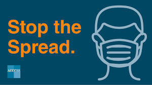
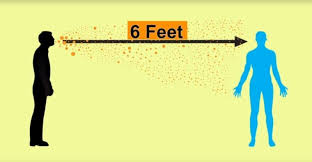
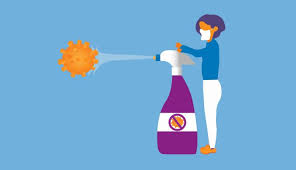

Precautionary measures of coronavirus
How to Protect Yourself & Others
Important Ways to Slow the Spread
- Wear a mask that covers your nose and mouth to help protect yourself and others.
- Stay 6 feet apart from others who don’t live with you.
- Get a COVID-19 vaccine when it is available to you.
- Avoid crowds and poorly ventilated indoor spaces.
- Wash your hands often with soap and water. Use hand sanitizer if soap and water aren’t available.
Wear a mask

- Everyone 2 years and older should wear masks in public.
- Masks should be worn in addition to staying at least 6 feet apart, especially around people who don’t live with you.
- If someone in your household is infected, people in the household should take precautions including wearing masks to avoid spread to others.
- Wash your hands or use hand sanitizer before putting on your mask.
- Wear your mask over your nose and mouth and secure it under your chin.
- Fit the mask snugly against the sides of your face, slipping the loops over your ears or tying the strings behind your head.
- If you have to continually adjust your mask, it doesn’t fit properly, and you might need to find a different mask type or brand.
- Make sure you can breathe easily.
Stay 6 feet away from others

* In Side your house:
Avoid close contact with people who are sick.
* Out Side your house:
Put 6 feet of distance between yourself and people who don’t live in your household.
Wash your hands often
- Wash your hands often with soap and water for at least 20 seconds especially after you have been in a public place, or after blowing your nose, coughing, or sneezing.
- It’s especially important to wash:
- Before eating or preparing food
- Before touching your face
- After using the restroom
- After leaving a public place
- After blowing your nose, coughing, or sneezing
- After handling your mask
- After changing a diaper
- After caring for someone sick
- After touching animals or pets
- If soap and water are not readily available, use a hand sanitizer that contains at least 60% alcohol. Cover all surfaces of your hands and rub them together until they feel dry.
- Avoid touching your eyes, nose, and mouth with unwashed hands.
Clean and disinfect

- Clean high touch surfaces daily. This includes tables, doorknobs, light switches, countertops, handles, desks, phones, keyboards, toilets, faucets, and sinks.
- If someone is sick or has tested positive for COVID-19, disinfect frequently touched surfaces. Use a household disinfectant product from EPA’s List N: Disinfectants for Coronavirus (COVID-19)external icon according to manufacturer’s labeled directions.
- - If surfaces are dirty, clean them using detergent or soap and water prior to disinfection.